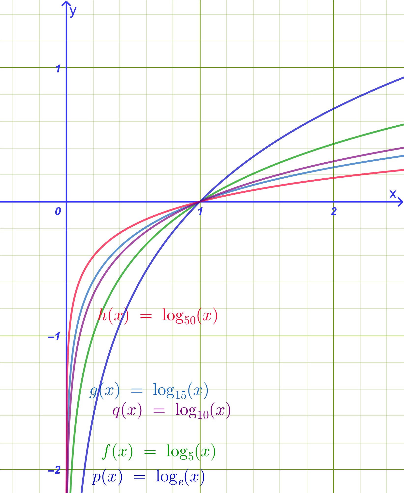
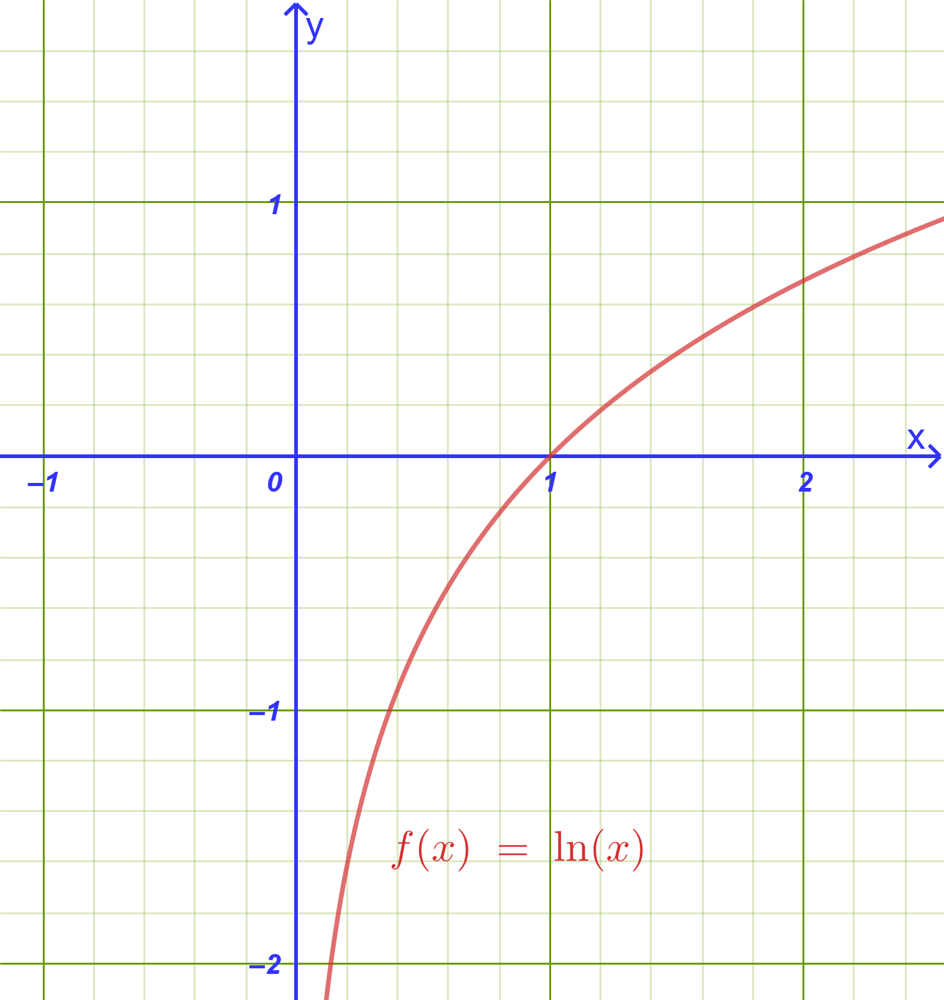
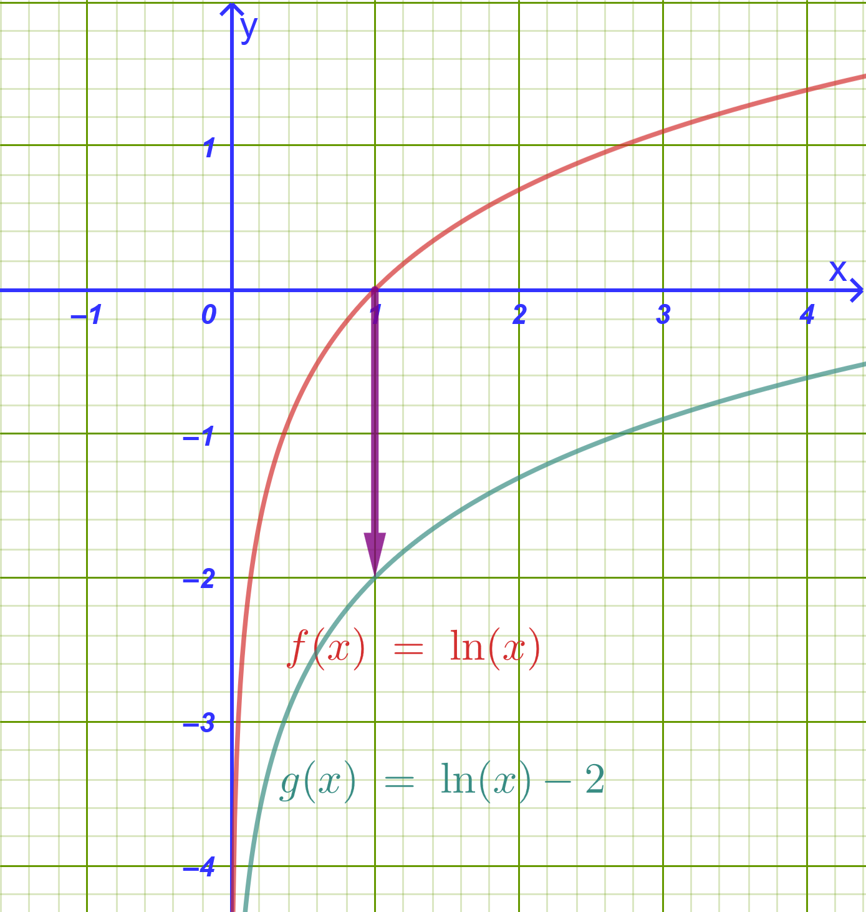
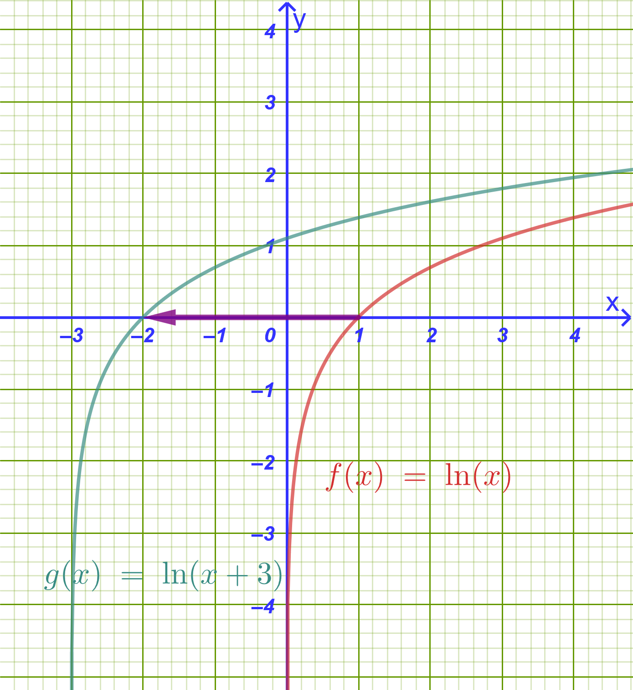
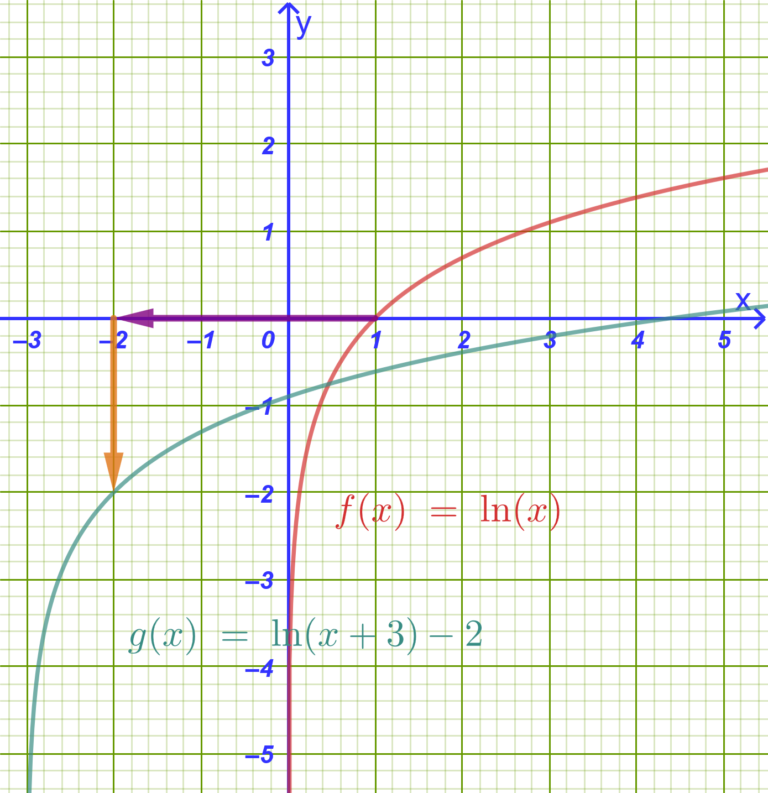

1 Λογαριθμική συνάρτηση
1.1 Ορισμός της Λογαριθμικής Συνάρτησης
Ορισμός
Έστω \(a\) ένας θετικός αριθμός διαφορετικός της μονάδας (\(a > 0, a \neq 1\)).
Για κάθε \(x \in (0, +\infty)\) ορίζεται ο λογάριθμος \(\log_a x\).
Αντιστοιχίζοντας κάθε \(x \in (0, +\infty)\) στο \(\log_a x\), ορίζουμε τη συνάρτηση: \[\mathbf{f: (0, +\infty) \to \mathbb{R} \quad \text{με τύπο} \quad f(x) = \log_a x}\] Η συνάρτηση αυτή ονομάζεται λογαριθμική συνάρτηση με βάση \(a\).

Σύνδεση με την Εκθετική Συνάρτηση:
Η λογαριθμική συνάρτηση \(f(x) = \log_a x\) ορίζεται ως η αντίστροφη συνάρτηση της εκθετικής συνάρτησης \(g(x) = a^x\) (\(a > 0, a \neq 1\)).
Πεδίο Ορισμού: \(D_f = (0, +\infty)\) (το σύνολο τιμών της εκθετικής).
Σύνολο Τιμών: \(f(D_f) = \mathbb{R}\) (το πεδίο ορισμού της εκθετικής).
1.2 Συμμετρία με την \(y = a^x\) & Μελέτη της Λογαριθμικής Συνάρτησης
1.2.1 α) Συμμετρία ως προς την ευθεία \(y = x\)
Επειδή ισχύει η ισοδυναμία \(y = \log_a x \iff x = a^y\), αν το σημείο \(M(\xi, \eta)\) ανήκει στη γραφική παράσταση της \(y = \log_a x\), τότε το σημείο \(N(\eta, \xi)\) ανήκει στη γραφική παράσταση της \(y = a^x\) και αντιστρόφως.
Τα σημεία \(M(\xi, \eta)\) και \(N(\eta, \xi)\) είναι συμμετρικά ως προς την ευθεία \(y = x\) (τη διχοτόμο της 1ης και 3ης γωνίας των αξόνων).
Συμπέρασμα: Οι γραφικές παραστάσεις των συναρτήσεων \(y = \log_a x\) και \(y = a^x\) είναι συμμετρικές ως προς την ευθεία \(y = x\).
Οδηγία
Επιλέξτε το δρομέα και με > η < αλλάζετε την τιμή της βάσης α.
Για ακρίβεια (κυρίως μεταξύ 0 και 1) Shift+> η Shift+<
Τι συμβαίνει καθώς η βάση αυξάνει;
Τι συμβαίνει όταν η βάση βρίσκεται μεταξύ 0 και 1;
Παρατηρήστε σε κάθε περίπτωση την συμμετρία με την εκθετική συνάρτηση.
Διερευνήστε με βάση την γραφική παράσταση τον παρακάτω πίνακα.
1.2.2 β) Μελέτη της Συνάρτησης \(f(x) = \log_a x\)
| Ιδιότητα / Χαρακτηριστικό | Περίπτωση \(a > 1\) (π.χ. \(f(x) = \ln x\) ή \(\log_2 x\)) | Περίπτωση \(0 < a < 1\) (π.χ. \(f(x) = \log_{1/2} x\)) |
|---|---|---|
| Πεδίο Ορισμού | \(D = (0, +\infty)\) | \(D = (0, +\infty)\) |
| Σύνολο Τιμών | \(f(D) = \mathbb{R}\) | \(f(D) = \mathbb{R}\) |
| Μονοτονία | Γνησίως αύξουσα στο \((0, +\infty)\) (\(x_1 < x_2 \implies \log_a x_1 < \log_a x_2\)) | Γνησίως φθίνουσα στο \((0, +\infty)\) (\(x_1 < x_2 \implies \log_a x_1 > \log_a x_2\)) |
| Πρόσημο Τιμών | \(\log_a x < 0\) για \(0 < x < 1\) \(\log_a x > 0\) για \(x > 1\) |
\(\log_a x > 0\) για \(0 < x < 1\) \(\log_a x < 0\) για \(x > 1\) |
| Σημεία Τομής | Τέμνει τον άξονα \(x'x\) στο \(A(1,0)\). Δεν τέμνει τον \(y'y\). | Τέμνει τον άξονα \(x'x\) στο \(A(1,0)\). Δεν τέμνει τον \(y'y\). |
| Ασύμπτωτη | Ο αρνητικός ημιάξονας \(Oy'\) (\(x = 0\) όταν \(y \to -\infty\)). | Ο θετικός ημιάξονας \(Oy\) (\(x = 0\) όταν \(y \to +\infty\)). |
| Ιδιότητα 1-1 | \(\log_a x_1 = \log_a x_2 \iff x_1 = x_2\) | \(\log_a x_1 = \log_a x_2 \iff x_1 = x_2\) |
1.3 Λύση Λογαριθμικών Εξισώσεων
Μεθοδολογία Επίλυσης:
Πεδίο Ορισμού (Περιορισμοί): Βρίσκουμε το πεδίο ορισμού απαιτώντας οι υπόλογαριθμες παραστάσεις να είναι αυστηρά θετικές (\(f(x) > 0\)) και οι βάσεις θετικές και διάφορες της μονάδας.
Αναγωγή σε Ισοδύναμη Μορφή: Εφαρμόζουμε τις ιδιότητες των λογαρίθμων:
Μορφή \(\log_a f(x) = \log_a g(x) \iff f(x) = g(x)\).
Μορφή \(\log_a f(x) = k \iff f(x) = a^k\).
Μορφή \(A \log_a^2 f(x) + B \log_a f(x) + C = 0\) (θέτοντας \(u = \log_a f(x)\)).
Εξαγωγή & Έλεγχος ριζών: Δεχόμαστε μόνο τις ρίζες που ανήκουν στο πεδίο ορισμού.
1.3.1 Παραδείγματα Εξισώσεων:
Παράδειγμα 1:
Να λυθεί η εξίσωση: \(\log(x + 1) + \log(x - 1) = \log 3\)
Λύση
Περιορισμοί: \(x + 1 > 0 \iff x > -1\) και \(x - 1 > 0 \iff x > 1\). Συναληθεύοντας: \(x > 1\).
Επίλυση: \[\log[(x + 1)(x - 1)] = \log 3 \iff (x + 1)(x - 1) = 3 \iff \\ x^2 - 1 = 3 \iff x^2 = 4 \iff x = 2 \quad \text{ή} \quad x = -2\]
Έλεγχος: Η τιμή \(x = -2\) απορρίπτεται (\(x \ngtr 1\)). Η τιμή \(x = 2\) είναι η μοναδική δεκτή ρίζα.
Παράδειγμα 2:
Να λυθεί η εξίσωση: \(\log_2(x^2 - 3x + 6) = 3\)
Λύση
Περιορισμοί: \(x^2 - 3x + 6 > 0\), το οποίο ισχύει για κάθε \(x \in \mathbb{R}\) (αφού \(\Delta = 9 - 24 = -15 < 0\)).
Επίλυση: \[x^2 - 3x + 6 = 2^3 \iff x^2 - 3x + 6 = 8 \iff x^2 - 3x - 2 = 0\] \[\Delta = (-3)^2 - 4(1)(-2) = 9 + 8 = 17 \implies \mathbf{x = \frac{3 \pm \sqrt{17}}{2}}\]
Παράδειγμα 3 (Με Αλλαγή Μεταβλητής):
Να λυθεί η εξίσωση: \(\log^2 x - 5 \log x + 6 = 0\)
Λύση
Περιορισμός: \(x > 0\).
Επίλυση: Θέτουμε \(u = \log x\). Η εξίσωση γίνεται: \[u^2 - 5u + 6 = 0 \iff (u - 2)(u - 3) = 0 \iff u = 2 \quad \text{ή} \quad u = 3\]
Αν \(u = 2 \iff \log x = 2 \iff \log x = \log 100 \iff \mathbf{x = 100}\)
Αν \(u = 3 \iff \log x = 3 \iff \log x = \log 1000 \iff \mathbf{x = 1000}\)
1.4 Λύση Λογαριθμικών Συστημάτων
1.4.1 Παραδείγματα Συστημάτων:
Παράδειγμα 1:
Να λυθεί το σύστημα: \[\begin{cases} x + y = 25 \\ \log x + \log y = 2 \end{cases}\]
Λύση
Περιορισμοί: \(x > 0\) και \(y > 0\).
Επεξεργασία 2ης εξίσωσης: \[\log x + \log y = 2 \iff \log(xy) = \log 100 \iff xy = 100\]
Επίλυση αλγεβρικού συστήματος:
Οι \(x, y\) είναι ρίζες της εξίσωσης \(t^2 - 25t + 100 = 0 \iff (t - 5)(t - 20) = 0 \iff t = 5\) ή \(t = 20\).
Άρα οι λύσεις είναι τα ζεύγη \((x, y) = (5, 20)\) ή \((x, y) = (20, 5)\).
Παράδειγμα 2:
Να λυθεί το σύστημα: \[\begin{cases} \log x - \log y = 1 \\ \log x + 2 \log y = 4 \end{cases}\]
Λύση
Περιορισμοί: \(x > 0, y > 0\).
Αλλαγή μεταβλητών: Θέτουμε \(u = \log x\) και \(v = \log y\): \[\begin{cases} u - v = 1 \\ u + 2v = 4 \end{cases}\]
Αφαιρούμε κατά μέλη: \(3v = 3 \iff v = 1\).
Τότε \(u - 1 = 1 \iff u = 2\).
- Επιστροφή στους αγνώστους:
\(\log x = 2 \iff \mathbf{x = 100}\)
\(\log y = 1 \iff \mathbf{y = 10}\)
Άρα η μοναδική λύση είναι το ζεύγος \((x, y) = (100, 10)\).
Παράδειγμα 3:
Να λυθεί το σύστημα: \[\begin{cases} x \cdot y = 100 \\ \log x \cdot \log y = 2 \end{cases}\]
Λύση
Περιορισμοί: \(x > 0, y > 0\).
Λογαριθμίζουμε την 1η εξίσωση: \(\log(xy) = \log 100 \iff \log x + \log y = 2\).
Έχουμε το σύστημα: \(\begin{cases} \log x + \log y = 2 \\ \log x \cdot \log y = 2 \end{cases}\).
Οι \(\log x, \log y\) είναι ρίζες της εξίσωσης \(w^2 - 2w + 2 = 0\).
Επειδή \(\Delta = (-2)^2 - 4(1)(2) = 4 - 8 = -4 < 0\), η εξίσωση δεν έχει πραγματικές ρίζες.
Άρα το σύστημα είναι αδύνατο στο \(\mathbb{R}\).
1.5 Λύση Λογαριθμικών Ανισώσεων
1.5.1 Μεθοδολογία Επίλυσης:
Πεδίο Ορισμού: Επιβάλλουμε περιορισμούς θετικότητας για όλες τις υπόλογαριθμες εκφράσεις.
Χρήση Μονοτονίας:
Αν \(a > 1\): \(\log_a f(x) > \log_a g(x) \iff f(x) > g(x)\) (διατηρείται η φορά).
Αν \(0 < a < 1\): \(\log_a f(x) > \log_a g(x) \iff f(x) < g(x)\) (αλλάζει η φορά).
- Συναλήθευση: Συναληθεύουμε τις λύσεις με το πεδίο ορισμού.
1.5.2 Παραδείγματα Ανισώσεων:
Παράδειγμα 1 (Βάση \(a > 1\)):
Να λυθεί η ανίσωση: \(\log_2(2x - 1) < 3\)
Λύση
Περιορισμός: \(2x - 1 > 0 \iff x > \dfrac{1}{2}\).
Επίλυση:
Επειδή η βάση είναι \(2 > 1\), η συνάρτηση είναι γνησίως αύξουσα: \[\log_2(2x - 1) < \log_2(2^3) \iff 2x - 1 < 8 \iff 2x < 9 \iff x < \frac{9}{2}\]
- Συναλήθευση: \(\dfrac{1}{2} < x < \dfrac{9}{2} \iff \mathbf{x \in \left(\dfrac{1}{2}, \dfrac{9}{2}\right)}\).
Παράδειγμα 2 (Βάση \(0 < a < 1\)):
Να λυθεί η ανίσωση: \(\log_{0.5}(x^2 - 5x + 6) \ge -1\)
Λύση
Περιορισμός: \(x^2 - 5x + 6 > 0 \iff (x - 2)(x - 3) > 0 \iff x < 2 \quad \text{ή} \quad x > 3\).
Επίλυση:
Επειδή η βάση είναι \(0.5 < 1\), η συνάρτηση είναι γνησίως φθίνουσα, οπότε η φορά αλλάζει: \[\log_{0.5}(x^2 - 5x + 6) \ge \log_{0.5}\left((0.5)^{-1}\right) \iff x^2 - 5x + 6 \le 2 \iff x^2 - 5x + 4 \le 0\] \[(x - 1)(x - 4) \le 0 \iff 1 \le x \le 4\]
Συναλήθευση με το πεδίο ορισμού: \[\mathbf{x \in [1, 2) \cup (3, 4]}\]
Παράδειγμα 3 (Άθροισμα Λογαρίθμων):
Να λυθεί η ανίσωση: \(\ln(x - 1) + \ln(x + 2) < \ln 4\)
Λύση
Περιορισμοί: \(x - 1 > 0 \iff x > 1\) και \(x + 2 > 0 \iff x > -2\). Συναληθεύοντας: \(x > 1\).
Επίλυση: \[\ln[(x - 1)(x + 2)] < \ln 4 \iff (x - 1)(x + 2) < 4 \iff x^2 + x - 2 < 4 \iff x^2 + x - 6 < 0\] \[(x + 3)(x - 2) < 0 \iff -3 < x < 2\]
Συναλήθευση: Για \(x > 1\) και \(-3 < x < 2\), προκύπτει \(x \in (1, 2)\).
1.6 Γραφική Παράσταση & Μετατοπίσεις Συναρτήσεων στο ίδιο Σύστημα Αξόνων
Εξετάζουμε τις συναρτήσεις:
\(\phi(x) = \ln x\)
\(f(x) = \ln x - 2\)
\(g(x) = \ln(x+3)\)
\(h(x) = \ln(x+3) - 2\)
1.6.1 α) Αναλυτική Ερμηνεία των Μετατοπίσεων
- \(\phi(x) = \ln x\) (Αρχική Συνάρτηση):

Πεδίο Ορισμού: \((0, +\infty)\), Σύνολο Τιμών: \(\mathbb{R}\).
Μονοτονία: Γνησίως αύξουσα.
Χαρακτηριστικά Σημεία: Τέμνει τον \(x'x\) στο \((1, 0)\) και διέρχεται από το σημείο \((e, 1) \approx (2.72, 1)\).
Κατακόρυφη Ασύμπτωτη: Ο άξονας \(y'y\) (ευθεία \(x = 0\)).
- \(f(x) = \ln x - 2\) (Κατακόρυφη Μετατόπιση):

Προκύπτει από μια κατακόρυφη μετατόπιση της καμπύλης \(y = \ln x\) κατά \(2\) μονάδες προς τα κάτω.
Πεδίο Ορισμού: \((0, +\infty)\), Κατακόρυφη Ασύμπτωτη: \(x = 0\).
Τομή με τον \(x'x\): \(\ln x - 2 = 0 \iff \ln x = 2 \iff x = e^2 \approx 7.39 \implies (e^2, 0)\).
Τομή με τον \(y'y\): Δεν τέμνει τον \(y'y\).
- \(g(x) = \ln(x+3)\) (Οριζόντια Μετατόπιση):

Προκύπτει από μια οριζόντια μετατόπιση της καμπύλης \(y = \ln x\) κατά \(3\) μονάδες προς τα αριστερά.
Πεδίο Ορισμού: \(x + 3 > 0 \iff (-3, +\infty)\).
Κατακόρυφη Ασύμπτωτη: Η ευθεία \(x = -3\).
Τομή με τον \(x'x\): \(\ln(x+3) = 0 \iff x + 3 = 1 \iff x = -2 \implies (-2, 0)\).
Τομή με τον \(y'y\): Για \(x = 0 \implies g(0) = \ln 3 \approx 1.10 \implies (0, \ln 3)\).
- \(h(x) = \ln(x+3) - 2\) (Συνδυασμένη Μετατόπιση):

Προκύπτει από οριζόντια μετατόπιση κατά \(3\) μονάδες προς τα αριστερά και κατακόρυφη μετατόπιση κατά \(2\) μονάδες προς τα κάτω της καμπύλης \(y = \ln x\).
Πεδίο Ορισμού: \((-3, +\infty)\), Κατακόρυφη Ασύμπτωτη: Η ευθεία \(x = -3\).
Τομή με τον \(x'x\): \(\ln(x+3) - 2 = 0 \iff \ln(x+3) = 2 \iff x + 3 = e^2 \iff x = e^2 - 3 \approx 4.39 \implies (e^2 - 3, 0)\).
Τομή με τον \(y'y\): Για \(x = 0 \implies h(0) = \ln 3 - 2 \approx -0.90 \implies (0, \ln 3 - 2)\).
1.6.2 β) Συγκεντρωτικός Πίνακας Μελέτης & Σχεδίασης στο ίδιο Σύστημα Αξόνων
| Συνάρτηση | Πεδίο Ορισμού | Κατακόρυφη Ασύμπτωτη | Σημείο Τομής με \(x'x\) | Σημείο Τομής με \(y'y\) | Είδη Μετατόπισης |
|---|---|---|---|---|---|
| \(\phi(x) = \ln x\) | \((0, +\infty)\) | \(x = 0\) (\(y'y\)) | \((1, 0)\) | Δεν υπάρχει | Αρχική καμπύλη |
| \(f(x) = \ln x - 2\) | \((0, +\infty)\) | \(x = 0\) (\(y'y\)) | \((e^2, 0) \approx (7.39, 0)\) | Δεν υπάρχει | \(2\) μονάδες ΚΑΤΩ |
| \(g(x) = \ln(x+3)\) | \((-3, +\infty)\) | \(x = -3\) | \((-2, 0)\) | \((0, \ln 3) \approx (0, 1.10)\) | \(3\) μονάδες ΑΡΙΣΤΕΡΑ |
| \(h(x) = \ln(x+3) - 2\) | \((-3, +\infty)\) | \(x = -3\) | \((e^2 - 3, 0) \approx (4.39, 0)\) | \((0, \ln 3 - 2) \approx (0, -0.90)\) | \(3\) ΑΡΙΣΤΕΡΑ & \(2\) ΚΑΤΩ |
1.7 Ασκήσεις Εμπέδωσης
1.7.1 Κατηγορία Α: Πεδίο Ορισμού & Ιδιότητες (1–4)
- Να βρεθεί το πεδίο ορισμού των συναρτήσεων:
α) \(f(x) = \ln(x^2 - 9)\)
β) \(g(x) = \log_5\left(\dfrac{x - 1}{4 - x}\right)\)
Υπόδειξη
Λύνουμε την ανίσωση \(\dfrac{x-1}{x-4} \gt0\)
- γ) \(h(x) = \log_{x-2}(10 - x)\)
Υπόδειξη
πρέπει \(x-2 \gt 0 \quad\), \(\quad x-2\ne 1 \quad\) και \(\quad 10-x \gt 0\)
- Να υπολογιστεί η τιμή της παράστασης:
\(A = \log_3 18 + \log_3 12 - 2 \log_3 2 - \log_3 6\)
- Να αποδειχθεί ότι: \(\ln(e^3 \cdot \sqrt{e}) - \ln\left(\dfrac{1}{e}\right) = 4.5\).
Υπόδειξη
\(\ln(e^3 \cdot \sqrt{e}) - \ln\left(\dfrac{1}{e}\right)=\ln\left( \dfrac{e^3\cdot\sqrt{e}}{\dfrac{1}{e}}\right)=\ln\left(e^4\cdot e^\dfrac{1}{2}\right)=\ln\left(e^{\dfrac{9}{2}}\right)= ............\)
Εναλλακτικά μπορείτε να χρησιμοποιήσετε το \(\ln\left(\dfrac{1}{e}\right)=-\ln e\)
- Να προσδιοριστεί το πρόσημο των τιμών: \(\log_2 0.3\), \(\log_{0.2} 0.5\) και \(\ln(\pi - 2)\).
1.7.2 Κατηγορία Β: Λογαριθμικές Εξισώσεις (5–8)
- Να λυθούν στο \(\mathbb{R}\) οι εξισώσεις:
α) \(\log_3(3x - 2) = 2\)
β) \(\ln(x^2 - 5x + 7) = 0\)
Υπόδειξη
\(\ln (x^2-5x+7)=0=\ln 1 \implies .........................\)
- Να λυθεί η εξίσωση:
\(\log(x + 2) + \log(x - 1) = 1\)
Υπόδειξη
\(\implies \log[(x+2)(x-1)]=\log 10 \implies ..................\)
Πάντα να λαμβάνετε υπ’ όψιν τους περιορισμούς.
- Να λυθεί η εξίσωση:
\(\log_2^2 x - 4 \log_2 x + 3 = 0\)
Υπόδειξη
Θέσε \(\log_2 x=λ\) και λύσε το τριώνυμο. Μην ξεχνάς να βρίσκεις πρώτα τους περιορισμούς.
- Εκφώνηση
Να λυθεί η εκθετική εξίσωση με τη βοήθεια λογαρίθμων:
\(5^{2x - 1} = 3^{x + 2}\)
Λύση
\[5^{2x - 1} = 3^{x + 2}\]
1: Λογαριθμίζουμε και τα δύο μέλη
Επειδή οι δύο βάσεις (\(5\) και \(3\)) είναι διαφορετικές και θετικές, εφαρμόζουμε τον δεκαδικό λογάριθμο (\(\log\)) ή τον φυσικό λογάριθμο (\(\ln\)) και στα δύο μέλη:
\[\log(5^{2x - 1}) = \log(3^{x + 2})\]
2: Χρήση της ιδιότητας των δυνάμεων
Κατεβάζουμε τους εκθέτες μπροστά από τους λογαρίθμους:
\[(2x - 1) \cdot \log 5 = (x + 2) \cdot \log 3\]
3: Εκτέλεση των πολλαπλασιασμών
Επιμερίζουμε τους όρους:
\[2x \cdot \log 5 - \log 5 = x \cdot \log 3 + 2\log 3\]
4: Χωρισμός γνωστών από αγνώστους
Συγκεντρώνουμε όλους τους όρους που περιέχουν το \(x\) στο αριστερό μέλος και τους σταθερούς όρους στο δεξί μέλος:
\[2x \cdot \log 5 - x \cdot \log 3 = 2\log 3 + \log 5\]
Βγάζουμε κοινό παράγοντα το \(x\):
\[x \cdot (2\log 5 - \log 3) = 2\log 3 + \log 5\]
5: Επίλυση ως προς \(x\)
Διαιρούμε με τον συντελεστή του \(x\):
\[x = \frac{2\log 3 + \log 5}{2\log 5 - \log 3}\]
6: Απλοποίηση με ιδιότητες λογαρίθμων (προαιρετικά)
Χρησιμοποιώντας τις ιδιότητες των λογαρίθμων:
Αριθμητής: \(2\log 3 + \log 5 = \log(3^2) + \log 5 = \log 9 + \log 5 = \log(9 \cdot 5) = \log 45\)
Παρονομαστής: \(2\log 5 - \log 3 = \log(5^2) - \log 3 = \log 25 - \log 3 = \log\left(\dfrac{25}{3}\right)\)
Άρα η λύση μπορεί να γραφτεί και ως:
\[x = \frac{\log 45}{\log\left(\frac{25}{3}\right)}\]
ή μέσω του τύπου αλλαγής βάσης:
\[x = \log_{\frac{25}{3}}(45)\]
1.7.3 Κατηγορία Γ: Λογαριθμικά Συστήματα (9–12)
- Να λυθεί το σύστημα: \[\begin{cases} x + y = 11 \\ \log x + \log y = 1 \end{cases}\]
Υπόδειξη
Η δεύτερη εξίσωση γράφεται \(\log x + \log y= \log 10 \implies xy=10\)
Έτσι λύνουμε το σύστημα \[\begin{cases}x+y=11 \\ xy=10\end{cases}\]
- Να λυθεί το σύστημα: \[\begin{cases} \ln x - \ln y = \ln 2 \\ x^2 + y^2 = 20 \end{cases}\]
Υπόδειξη
Περιορισμοί …………………….
Η πρώτη γράφεται \(\ln \dfrac{x}{y}=\ln 2 \implies \dfrac{x}{y}=2\)
- Να λυθεί το σύστημα: \[\begin{cases} \log_2 x + \log_2 y = 5 \\ \log_2 x \cdot \log_2 y = 6 \end{cases}\]
Υπόδειξη
Περιορισμοί …………………………..
Βάλε \(\log_2 x=m \quad\) και \(\log_2 y=n\)
- Να λυθεί το σύστημα: \[\begin{cases} 2^{\log x} + 3^{\log y} = 11 \\ 4^{\log x} - 3^{\log y} = 5 \end{cases}\]
Υπόδειξη
Περιορισμοί ……………………….
Βάλε \(2^{\log x}=m \quad\) και \(3^{\log y}=n\)
1.7.4 Κατηγορία Δ: Λογαριθμικές Ανισώσεις (13–16)
- Να λυθεί στο \(\mathbb{R}\) η ανίσωση:
\(\log_3(4x - 1) < 2\)
Υπόδειξη
\(2=\log_3 9\)
- Να λυθεί η ανίσωση:
\(\log_{0.2}(x^2 - 3x) \ge -1\)
Υπόδειξη
\(-1=\log_{0,2} 5\)
- Να λυθεί η ανίσωση:
\(\ln(x^2 - 4) \le \ln(3x)\)
- Να λυθεί η ανίσωση:
\(\log^2 x - 3 \log x + 2 > 0\)
Υπόδειξη
\(\log x=m\)
1.7.5 Κατηγορία Ε: Μετατοπίσεις Γραφικών Παραστάσεων & Σύνθετα Θέματα (17–20)
- Δίνεται η συνάρτηση \(f(x) = \ln(x - 2) + 3\).
α) Να βρεθεί το πεδίο ορισμού και η κατακόρυφη ασύμπτωτη της \(f\).
β) Πώς προκύπτει η γραφική παράσταση της \(f\) από τη γραφική παράσταση της \(y = \ln x\);
- Να βρεθούν τα σημεία τομής των γραφικών παραστάσεων των συναρτήσεων \(f(x) = \ln(x^2 + 2)\) και \(g(x) = \ln(3x)\).
- Εκφώνηση
Να αποδειχθεί ότι για κάθε \(x > 0\) ισχύει:
\(\log\left(x + \dfrac{1}{x}\right) \ge \log 2\)
Λύση
1: Απόδειξη της βασικής αλγεβρικής ανισότητας
Για κάθε θετικό πραγματικό αριθμό \(x > 0\), εξετάζουμε τη διαφορά:
\[x + \frac{1}{x} - 2\]
Κάνουμε ομώνυμα τα κλάσματα:
\[x + \frac{1}{x} - 2 = \frac{x^2 + 1 - 2x}{x} = \frac{x^2 - 2x + 1}{x} = \frac{(x - 1)^2}{x}\]
Επειδή για κάθε \(x \in \mathbb{R}\) ισχύει \((x - 1)^2 \ge 0\) και για \(x > 0\) ο παρονομαστής είναι θετικός, έχουμε:
\[\frac{(x - 1)^2}{x} \ge 0\]
Συνεπώς:
\[x + \frac{1}{x} - 2 \ge 0 \iff x + \frac{1}{x} \ge 2\]
(Η ισότητα ισχύει αν και μόνο αν \(x - 1 = 0 \iff x = 1\)).
2: Εφαρμογή της λογαριθμικής συνάρτησης
Θεωρούμε τη συνάρτηση: \[f(t) = \log t, \quad t > 0\]
Επειδή η βάση του δεκαδικού λογαρίθμου είναι \(10 > 1\), η συνάρτηση \(f(t) = \log t\) είναι γνησίως αύξουσα στο \((0, +\infty)\).
Επομένως, διατηρεί τη φορά της ανισότητας:
\[x + \frac{1}{x} \ge 2 \implies \log\left(x + \frac{1}{x}\right) \ge \log 2\]
Η ανισότητα αποδείχθηκε, με την ισότητα να ισχύει όταν \(x = 1\).
- (Σύνθετη Άσκηση): Δίνεται η συνάρτηση \(f(x) = \ln\left(\frac{1 - x}{1 + x}\right)\).
α) Να βρεθεί το πεδίο ορισμού της \(f\).
β) Να αποδειχθεί ότι η συνάρτηση \(f\) είναι περιττή.
- Να λυθεί η εξίσωση:
\[x^{\log_3 x} = 81x^3\]
Λύση
Περιορισμοί
Για να ορίζεται ο λογάριθμος \(\log_3 x\), πρέπει: \[x > 0\]
1: Λογαριθμίζουμε και τα δύο μέλη
Επειδή η βάση του λογαρίθμου στον εκθέτη είναι το \(3\), εφαρμόζουμε τον \(\log_3\) και στα δύο μέλη της εξίσωσης:
\[\log_3\left(x^{\log_3 x}\right) = \log_3\left(81x^3\right)\]
2: Εφαρμογή των ιδιοτήτων των λογαρίθμων
Αριστερό μέλος: Ο εκθέτης \(\log_3 x\) «κατεβαίνει» μπροστά ως συντελεστής: \[\log_3\left(x^{\log_3 x}\right) = (\log_3 x) \cdot (\log_3 x) = (\log_3 x)^2\]
Δεξί μέλος: Ο λογάριθμος του γινομένου γίνεται άθροισμα λογαρίθμων: \[\log_3\left(81x^3\right) = \log_3(81) + \log_3(x^3)\]
Επειδή \(81 = 3^4\), έχουμε \(\log_3(81) = \log_3(3^4) = 4\).
Κατεβάζουμε τον εκθέτη: \(\log_3(x^3) = 3\log_3 x\).
Επομένως, η εξίσωση γίνεται: \[(\log_3 x)^2 = 4 + 3\log_3 x\]
3: Επίλυση της δευτεροβάθμιας εξίσωσης
Μεταφέρουμε όλους τους όρους στο αριστερό μέλος: \[(\log_3 x)^2 - 3\log_3 x - 4 = 0\]
Θέτουμε \(u = \log_3 x\): \[u^2 - 3u - 4 = 0\]
Παραγοντοποιούμε το τριώνυμο: \[(u - 4)(u + 1) = 0\]
Άρα οι λύσεις για το \(u\) είναι: \[u = 4 \quad \text{ή} \quad u = -1\]
4: Εύρεση του \(x\)
Επιστρέφουμε στην αρχική μεταβλητή (\(u = \log_3 x\)):
Για \(u = 4\): \[\log_3 x = 4 \iff x = 3^4 \iff x = 81\]
Για \(u = -1\): \[\log_3 x = -1 \iff x = 3^{-1} \iff x = \frac{1}{3}\]
Και οι δύο τιμές είναι θετικές (\(x > 0\)), άρα γίνονται δεκτές.
Τελικές Λύσεις
Οι λύσεις της εξίσωσης είναι: \[x = 81 \quad \text{και} \quad x = \frac{1}{3}\]
- Να λυθεί η εξίσωση:
\[7^{\cos^2 x} + 7^{\sin^2 x} = 8\]
Λύση
1: Χρήση της βασικής τριγωνομετρικής ταυτότητας
Από τη θεμελιώδη τριγωνομετρική ταυτότητα γνωρίζουμε ότι: \[\sin^2 x + \cos^2 x = 1 \implies \cos^2 x = 1 - \sin^2 x\]
Αντικαθιστούμε στην εξίσωση: \[7^{1 - \sin^2 x} + 7^{\sin^2 x} = 8\]
Χρησιμοποιώντας την ιδιότητα των δυνάμεων \(a^{m-n} = \frac{a^m}{a^n}\): \[\frac{7}{7^{\sin^2 x}} + 7^{\sin^2 x} = 8\]
2: Αλλαγή μεταβλητής
Θέτουμε: \[u = 7^{\sin^2 x}\]
Επειδή \(0 \le \sin^2 x \le 1\), ισχύει ότι \(7^0 \le u \le 7^1\), δηλαδή \(1 \le u \le 7\).
Η εξίσωση γίνεται: \[\frac{7}{u} + u = 8\]
Πολλαπλασιάζουμε και τα δύο μέλη με \(u\) (\(u > 0\)): \[7 + u^2 = 8u \iff u^2 - 8u + 7 = 0\]
3: Επίλυση της δευτεροβάθμιας εξίσωσης
Παραγοντοποιούμε το τριώνυμο: \[(u - 1)(u - 7) = 0\]
Άρα οι τιμές για το \(u\) είναι: \[u = 1 \quad \text{ή} \quad u = 7\]
Και οι δύο τιμές βρίσκονται στο διάστημα \([1, 7]\), άρα είναι δεκτές.
4: Επιστροφή στην αρχική μεταβλητή και εύρεση του \(x\)
Περίπτωση 1: \(u = 1\) \[7^{\sin^2 x} = 1 \iff 7^{\sin^2 x} = 7^0 \iff \sin^2 x = 0 \iff \sin x = 0\]
Οι λύσεις της \(\sin x = 0\) είναι: \[x = k\pi, \quad k \in \mathbb{Z}\]
Περίπτωση 2: \(u = 7\) \[7^{\sin^2 x} = 7 \iff 7^{\sin^2 x} = 7^1 \iff \sin^2 x = 1 \iff \cos^2 x = 0 \iff \cos x = 0\]
Οι λύσεις της \(\cos x = 0\) είναι: \[x = k\pi + \frac{\pi}{2}, \quad k \in \mathbb{Z}\]
Τελικές Λύσεις
Συνδυάζοντας τις δύο περιπτώσεις (\(x = k\pi\) και \(x = k\pi + \frac{\pi}{2}\)), οι λύσεις μπορούν να γραφτούν ενιαία ως:
\[x = \frac{k\pi}{2}, \quad k \in \mathbb{Z}\]
- Να λυθεί η εξίσωση:
\[\log_3(x^2 - 5x + 13) = 2\]
Λύση
Περιορισμοί
Για να ορίζεται ο λογάριθμος, πρέπει η παράσταση στο εσωτερικό του να είναι θετική: \[x^2 - 5x + 13 > 0\]
Ελέγχουμε τη διακρίνουσα \(\Delta\) του τριωνύμου: \[\Delta = (-5)^2 - 4 \cdot 1 \cdot 13 = 25 - 52 = -27 < 0\]
Επειδή \(\Delta < 0\) και ο συντελεστής του \(x^2\) είναι \(1 > 0\), το τριώνυμο είναι θετικό για κάθε \(x \in \mathbb{R}\). Επομένως, η εξίσωση ορίζεται για κάθε \(x \in \mathbb{R}\).
Επίλυση
Από τον βασικό ορισμό του λογαρίθμου (\(\log_a y = b \iff y = a^b\)):
\[x^2 - 5x + 13 = 3^2\]
\[x^2 - 5x + 13 = 9\]
Μεταφέρουμε το \(9\) στο αριστερό μέλος:
\[x^2 - 5x + 13 - 9 = 0\]
\[x^2 - 5x + 4 = 0\]
Παραγοντοποιούμε το τριώνυμο:
\[(x - 1)(x - 4) = 0\]
Άρα οι λύσεις είναι:
\[x = 1 \quad \text{ή} \quad x = 4\]
Τελικές Λύσεις
\[x = 1 \quad \text{και} \quad x = 4\]
- Να λυθεί η εξίσωση:
\[\log_3(x + 1) = \log_9(x + 4)\]
Λύση
Περιορισμοί
Για να ορίζονται οι λογάριθμοι, πρέπει οι παραστάσεις στο εσωτερικό τους να είναι θετικές:
\(x + 1 > 0 \implies x > -1\)
\(x + 4 > 0 \implies x > -4\)
Συναληθεύοντας, έχουμε τον κοινό περιορισμό: \[x > -1\]
1: Αλλαγή βάσης στον λογάριθμο με βάση \(9\)
Εκφράζουμε τον \(\log_9(x + 4)\) με βάση το \(3\), χρησιμοποιώντας τον τύπο αλλαγής βάσης \(\log_b a = \dfrac{\log_c a}{\log_c b}\):
\[\log_9(x + 4) = \frac{\log_3(x + 4)}{\log_3(9)}\]
Επειδή \(9 = 3^2\), έχουμε \(\log_3(9) = 2\). Άρα:
\[\log_9(x + 4) = \frac{\log_3(x + 4)}{2} = \frac{1}{2}\log_3(x + 4)\]
2: Εξίσωση των λογαρίθμων
Αντικαθιστούμε στην αρχική εξίσωση:
\[\log_3(x + 1) = \frac{1}{2}\log_3(x + 4)\]
Πολλαπλασιάζουμε και τα δύο μέλη με \(2\):
\[2\log_3(x + 1) = \log_3(x + 4)\]
Ανεβάζουμε τον συντελεστή \(2\) ως εκθέτη:
\[\log_3\left((x + 1)^2\right) = \log_3(x + 4)\]
3: Επίλυση της εξίσωσης
Επειδή η λογαριθμική συνάρτηση είναι «1-1», εξισώνουμε τα ορίσματα:
\[(x + 1)^2 = x + 4\]
Αναπτύσσουμε το τετράγωνο:
\[x^2 + 2x + 1 = x + 4\]
Μεταφέρουμε όλους τους όρους στο αριστερό μέλος:
\[x^2 + x - 3 = 0\]
Χρησιμοποιούμε τον τύπο της διακρίνουσας για το τριώνυμο (\(a=1, β=1, γ=-3\)):
\[\Delta = β^2 - 4aγ = 1^2 - 4 \cdot 1 \cdot (-3) = 1 + 12 = 13\]
Οι ρίζες είναι:
\[x = \frac{-1 \pm \sqrt{13}}{2}\]
4: Έλεγχος των περιορισμών (\(x > -1\))
Γνωρίζουμε ότι \(9 < 13 < 16\), άρα \(3 < \sqrt{13} < 4\) (περίπου \(\sqrt{13} \approx 3,61\)).
Για τη θετική ρίζα: \[x_1 = \frac{-1 + \sqrt{13}}{2} \approx \frac{-1 + 3,61}{2} = \frac{2,61}{2} \approx 1,305 > -1 \quad (\Delta\epsilon\kappa\tau\acute{\eta})\]
Για την αρνητική ρίζα: \[x_2 = \frac{-1 - \sqrt{13}}{2} \approx \frac{-1 - 3,61}{2} = \frac{-4,61}{2} \approx -2,305 < -1 \quad (\text{A}\pi\text{o}\rho\rho\acute{\iota}\pi\tau\epsilon\tauα\iota)\]
Τελική Λύση
\[x = \frac{-1 + \sqrt{13}}{2}\]
- Να λυθεί η εξίσωση:
\[\log_5 x = \log_{25}(x + 1)\]
Λύση
Περιορισμοί
Για να ορίζονται οι λογάριθμοι, πρέπει:
\(x > 0\)
\(x + 1 > 0 \implies x > -1\)
Συναληθεύοντας, έχουμε τον κοινό περιορισμό: \[x > 0\]
1: Αλλαγή βάσης στον λογάριθμο με βάση \(25\)
Εκφράζουμε τον \(\log_{25}(x + 1)\) με βάση το \(5\), χρησιμοποιώντας τον τύπο αλλαγής βάσης:
\[\log_{25}(x + 1) = \frac{\log_5(x + 1)}{\log_5(25)}\]
Επειδή \(25 = 5^2\), έχουμε \(\log_5(25) = 2\). Άρα:
\[\log_{25}(x + 1) = \frac{\log_5(x + 1)}{2} = \frac{1}{2}\log_5(x + 1)\]
2: Εξίσωση των λογαρίθμων
Αντικαθιστούμε στην αρχική εξίσωση:
\[\log_5 x = \frac{1}{2}\log_5(x + 1)\]
Πολλαπλασιάζουμε και τα δύο μέλη με το \(2\):
\[2\log_5 x = \log_5(x + 1)\]
Ανεβάζουμε το \(2\) ως εκθέτη:
\[\log_5(x^2) = \log_5(x + 1)\]
3: Επίλυση της εξίσωσης
Επειδή η λογαριθμική συνάρτηση είναι «1-1», εξισώνουμε τα ορίσματα:
\[x^2 = x + 1\]
Μεταφέρουμε όλους τους όρους στο αριστερό μέλος:
\[x^2 - x - 1 = 0\]
Υπολογίζουμε τη διακρίνουσα (\(a = 1, β = -1, γ = -1\)):
\[\Delta = β^2 - 4aγ = (-1)^2 - 4 \cdot 1 \cdot (-1) = 1 + 4 = 5\]
Οι ρίζες της εξίσωσης είναι:
\[x = \frac{1 \pm \sqrt{5}}{2}\]
4: Έλεγχος των περιορισμών (\(x > 0\))
Γνωρίζουμε ότι \(\sqrt{5} \approx 2,24 > 1\):
Για τη θετική ρίζα: \[x_1 = \frac{1 + \sqrt{5}}{2} > 0 \quad (\Delta\epsilon\kappa\tau\acute{\eta})\] (Είναι ο γνωστός «χρυσός αριθμός» \(\varphi\))
Για την άλλη ρίζα: \[x_2 = \frac{1 - \sqrt{5}}{2} < 0 \quad (\text{A}\pi\text{o}\rho\rho\acute{\iota}\pi\tau\epsilon\tauα\iota)\]
Τελική Λύση
\[x = \frac{1 + \sqrt{5}}{2}\]
- Να λυθεί η εξίσωση:
\[\log_2 x + \log_x 4 = 3\]
Λύση
Περιορισμοί
Για τον λογάριθμο \(\log_2 x\), πρέπει: \(x > 0\).
Για τον λογάριθμο \(\log_x 4\), το \(x\) βρίσκεται στη βάση, επομένως πρέπει: \(x > 0\) και \(x \neq 1\).
Συνεπώς, ο περιορισμός είναι: \[x > 0 \quad \text{και} \quad x \neq 1\]
1: Αλλαγή βάσης στον δεύτερο λογάριθμο
Εκφράζουμε τον \(\log_x 4\) με βάση το \(2\), χρησιμοποιώντας τον τύπο αλλαγής βάσης:
\[\log_x 4 = \frac{\log_2 4}{\log_2 x}\]
Επειδή \(4 = 2^2\), έχουμε \(\log_2 4 = 2\). Άρα:
\[\log_x 4 = \frac{2}{\log_2 x}\]
2: Αλλαγή μεταβλητής
Αντικαθιστούμε στην αρχική εξίσωση:
\[\log_2 x + \frac{2}{\log_2 x} = 3\]
Θέτουμε \(u = \log_2 x\) (με \(u \neq 0\), αφού \(x \neq 1\)):
\[u + \frac{2}{u} = 3\]
3: Επίλυση της δευτεροβάθμιας εξίσωσης
Πολλαπλασιάζουμε και τα δύο μέλη με \(u\):
\[u^2 + 2 = 3u\]
\[u^2 - 3u + 2 = 0\]
Παραγοντοποιούμε το τριώνυμο:
\[(u - 1)(u - 2) = 0\]
Άρα:
\[u = 1 \quad \text{ή} \quad u = 2\]
4: Εύρεση του \(x\)
Επιστρέφουμε στη μεταβλητή \(x\) (\(u = \log_2 x\)):
Για \(u = 1\): \[\log_2 x = 1 \iff x = 2^1 \iff x = 2\]
Για \(u = 2\): \[\log_2 x = 2 \iff x = 2^2 \iff x = 4\]
Και οι δύο τιμές ικανοποιούν τους περιορισμούς (\(x > 0\) και \(x \neq 1\)), άρα είναι δεκτές.
Τελικές Λύσεις
\[x = 2 \quad \text{και} \quad x = 4\]
- Να λυθεί η εξίσωση:
\[\log(\log x) + \log(\log x^3 - 2) = 0\]
(Όπου \(\log = \log_{10}\) ο δεκαδικός λογάριθμος)
Λύση
Περιορισμοί
Για να ορίζονται όλοι οι λογάριθμοι, πρέπει τα ορίσματά τους να είναι θετικά:
Από τον εσωτερικό λογάριθμο \(\log x\): \[x > 0\]
Από τον εξωτερικό λογάριθμο \(\log(\log x)\): \[\log x > 0 \iff x > 1\]
Από τον δεύτερο εξωτερικό λογάριθμο \(\log(\log x^3 - 2)\): \[\log x^3 - 2 > 0 \iff 3\log x > 2 \iff \log x > \frac{2}{3} \iff x > 10^{2/3}\]
Συναληθεύοντας τους περιορισμούς, αφού \(10^{2/3} > 1\), απαιτείται: \[\log x > \frac{2}{3}\]
1: Απλοποίηση με ιδιότητες λογαρίθμων
Χρησιμοποιούμε την ιδιότητα \(\log x^3 = 3\log x\). Η εξίσωση γράφεται: \[\log(\log x) + \log(3\log x - 2) = 0\]
Το άθροισμα των λογαρίθμων γίνεται λογάριθμος του γινομένου: \[\log\left[\log x \cdot (3\log x - 2)\right] = 0\]
2: Απαλοιφή του εξωτερικού λογαρίθμου
Από τον ορισμό του δεκαδικού λογαρίθμου (\(\log A = 0 \iff A = 10^0 = 1\)): \[\log x \cdot (3\log x - 2) = 1\]
3: Επίλυση της δευτεροβάθμιας εξίσωσης
Θέτουμε \(u = \log x\): \[u(3u - 2) = 1\] \[3u^2 - 2u - 1 = 0\]
Υπολογίζουμε τη διακρίνουσα (\(a = 3, β = -2, γ = -1\)): \[\Delta = (-2)^2 - 4 \cdot 3 \cdot (-1) = 4 + 12 = 16\]
Οι λύσεις για το \(u\) είναι: \[u = \frac{2 \pm \sqrt{16}}{2 \cdot 3} = \frac{2 \pm 4}{6}\]
- \(u_1 = \dfrac{6}{6} = 1\)
- \(u_2 = \dfrac{-2}{6} = -\dfrac{1}{3}\)
4: Έλεγχος περιορισμών και εύρεση του \(x\)
Από τον περιορισμό γνωρίζουμε ότι πρέπει \(u = \log x > \dfrac{2}{3}\):
Για \(u = -\dfrac{1}{3}\): Απορρίπτεται, διότι \(-\dfrac{1}{3} < \dfrac{2}{3}\).
Για \(u = 1\): Είναι δεκτή, διότι \(1 > \dfrac{2}{3}\).
Επιστρέφουμε στη μεταβλητή \(x\): \[\log x = 1 \iff x = 10^1 \iff x = 10\]
Τελική Λύση
\[x = 10\]
- Να λυθεί η εξίσωση:
\[\log_{x+1}(x^2 + x - 6)^2 = 4\]
Λύση
Περιορισμοί
Για τη βάση:
\(x + 1 > 0 \implies x > -1\)
\(x + 1 \neq 1 \implies x \neq 0\)
Για το όρισμα:
Επειδή το όρισμα είναι υψωμένο στο τετράγωνο, είναι μη αρνητικό. Απαιτούμε απλώς να μην μηδενίζεται: \[(x^2 + x - 6)^2 > 0 \iff x^2 + x - 6 \neq 0\]
Παραγοντοποιούμε: \((x + 3)(x - 2) \neq 0 \implies x \neq -3\) και \(x \neq 2\).
Συναληθεύοντας όλους τους περιορισμούς: \[x \in (-1, 0) \cup (0, 2) \cup (2, +\infty)\]
1: Χρήση του ορισμού του λογαρίθμου
Από τον ορισμό \(\log_b y = c \iff y = b^c\):
\[(x^2 + x - 6)^2 = (x + 1)^4\]
2: Απλοποίηση της εξίσωσης
Γράφουμε το δεξί μέλος ως τετράγωνο: \[(x^2 + x - 6)^2 = \left[(x + 1)^2\right]^2\]
Από τη σχέση \(A^2 = B^2 \iff A = B\) ή \(A = -B\), διακρίνουμε δύο περιπτώσεις:
- Περίπτωση 1:
\[x^2 + x - 6 = (x + 1)^2\] \[x^2 + x - 6 = x^2 + 2x + 1\]
Απλοποιούμε το \(x^2\): \[x - 6 = 2x + 1 \iff x = -7\]
Έλεγχος: Το \(x = -7\) απορρίπτεται, διότι δεν ικανοποιεί τον περιορισμό \(x > -1\).
- Περίπτωση 2:
\[x^2 + x - 6 = -(x + 1)^2\] \[x^2 + x - 6 = -(x^2 + 2x + 1)\] \[x^2 + x - 6 = -x^2 - 2x - 1\]
Μεταφέρουμε όλους τους όρους στο αριστερό μέλος: \[2x^2 + 3x - 5 = 0\]
Υπολογίζουμε τη διακρίνουσα: \[\Delta = 3^2 - 4 \cdot 2 \cdot (-5) = 9 + 40 = 49\]
Οι ρίζες είναι: \[x = \frac{-3 \pm \sqrt{49}}{2 \cdot 2} = \frac{-3 \pm 7}{4}\]
\(x_1 = \dfrac{-3 + 7}{4} = \dfrac{4}{4} = 1\)
\(x_2 = \dfrac{-3 - 7}{4} = \dfrac{-10}{4} = -\dfrac{5}{2} = -2,5\)
3: Έλεγχος των λύσεων
Για \(x = -2,5\): Απορρίπτεται, διότι \(-2,5 < -1\).
Για \(x = 1\): Είναι δεκτή, διότι \(1 \in (-1, 0) \cup (0, 2) \cup (2, +\infty)\) (\(1 > -1, 1 \neq 0, 1 \neq 2\)).
Τελική Λύση
\[x = 1\]
- Να λυθεί η ανίσωση:
\[\log_5 x + \log_x \left(\frac{x}{3}\right) > \frac{(\log_5 x)(2 - \log_3 x)}{\log_3 x}\]
Λύση
Περιορισμοί
Για να ορίζονται όλοι οι όροι της ανίσωσης:
Από τον \(\log_5 x\): \(x > 0\).
Από τον \(\log_x\left(\frac{x}{3}\right)\): \(\frac{x}{3} > 0 \implies x > 0\), και επειδή το \(x\) είναι βάση: \(x > 0\) και \(x \neq 1\).
Από τον \(\log_3 x\) στον παρονομαστή: \(x > 0\) και \(\log_3 x \neq 0 \implies x \neq 1\).
Συνεπώς, το πεδίο ορισμού είναι: \[x \in (0, 1) \cup (1, +\infty)\]
1: Απλοποίηση των δύο μελών
- Αριστερό μέλος (LHS):
\[\log_x \left(\frac{x}{3}\right) = \log_x x - \log_x 3 = 1 - \log_x 3\] Άρα: \[\text{LHS} = \log_5 x + 1 - \log_x 3\]
- Δεξί μέλος (RHS):
Χρησιμοποιώντας τον τύπο αλλαγής βάσης, παρατηρούμε ότι: \[\frac{\log_5 x}{\log_3 x} = \frac{\dfrac{\ln x}{\ln 5}}{\dfrac{\ln x}{\ln 3}} = \frac{\ln 3}{\ln 5} = \log_5 3\]
Επομένως, το δεξί μέλος γίνεται: \[\text{RHS} = (\log_5 3)(2 - \log_3 x) = 2\log_5 3 - (\log_5 3 \cdot \log_3 x)\]
Επειδή \(\log_5 3 \cdot \log_3 x = \log_5 x\), έχουμε: \[\text{RHS} = 2\log_5 3 - \log_5 x\]
2: Ανασύνταξη της ανίσωσης
Η αρχική ανίσωση γράφεται: \[\log_5 x + 1 - \log_x 3 > 2\log_5 3 - \log_5 x\]
Μεταφέρουμε όλους τους όρους στο αριστερό μέλος: \[2\log_5 x + 1 - 2\log_5 3 - \log_x 3 > 0\]
Εκφράζουμε τον \(\log_x 3\) με βάση το \(5\): \(\log_x 3 = \dfrac{\log_5 3}{\log_5 x}\).
Θέτουμε για ευκολία: \[y = \log_5 x \quad \text{και} \quad a = \log_5 3\]
Η ανίσωση γίνεται: \[2y + 1 - 2a - \frac{a}{y} > 0\]
Κάνουμε ομώνυμα τα κλάσματα: \[\frac{2y^2 + (1 - 2a)y - a}{y} > 0\]
3: Παραγοντοποίηση του αριθμητή
Παρατηρούμε ότι ο αριθμητής παραγοντοποιείται: \[2y^2 + y - 2ay - a = y(2y + 1) - a(2y + 1) = (2y + 1)(y - a)\]
Έτσι, η ανίσωση παίρνει τη μορφή: \[\frac{(2y + 1)(y - a)}{y} > 0\]
Οι ρίζες του κλάσματος είναι:
\(y = -\dfrac{1}{2}\)
\(y = 0\) (από τον παρονομαστή)
\(y = a = \log_5 3\) (σημειώνουμε ότι επειδή \(1 < 3 < 5\), ισχύει \(0 < a < 1\))
Η διάταξη των ριζών στον άξονα είναι: \[-\dfrac{1}{2} < 0 < \log_5 3\]
4: Πρόσημο του κλάσματος
Μελετούμε το πρόσημο του πηλίκου \(P(y) = \dfrac{(2y + 1)(y - a)}{y}\):
Για \(y < -\dfrac{1}{2}\): \(P(y) < 0\)
Για \(-\dfrac{1}{2} < y < 0\): \(P(y) > 0\)
Για \(0 < y < a\): \(P(y) < 0\)
Για \(y > a\): \(P(y) > 0\)
Επομένως, θέλουμε \(P(y) > 0\), δηλαδή: \[-\frac{1}{2} < y < 0 \quad \text{ή} \quad y > a\]
5: Επιστροφή στη μεταβλητή \(x\)
Θυμόμαστε ότι \(y = \log_5 x\) και \(a = \log_5 3\):
Πρώτο διάστημα: \[-\frac{1}{2} < \log_5 x < 0\]
Επειδή η συνάρτηση \(\log_5\) είναι γνησίως αύξουσα (\(5 > 1\)): \[5^{-1/2} < x < 5^0 \iff \frac{1}{\sqrt{5}} < x < 1 \iff \frac{\sqrt{5}}{5} < x < 1\]
Δεύτερο διάστημα: \[\log_5 x > \log_5 3 \iff x > 3\]
Και τα δύο διαστήματα ικανοποιούν πλήρως τους αρχικούς περιορισμούς (\(x > 0\) και \(x \neq 1\)).
Τελική Λύση
\[x \in \left(\frac{\sqrt{5}}{5}, 1\right) \cup (3, +\infty)\]
- (Ταυτότητα & Εξίσωση)
Να αποδείξετε ότι για κάθε \(x > 0\) ισχύει \(x^{\log 3} = 3^{\log x}\) και στη συνέχεια να λύσετε την εξίσωση:
\[3^{2\log x} = 2 + x^{\log 3}\]
Απόδειξη:
Εφαρμόζουμε τον δεκαδικό λογάριθμο στα δύο μέλη: \[\log\left(x^{\log 3}\right) = \log 3 \cdot \log x\] \[\log\left(3^{\log x}\right) = \log x \cdot \log 3\]
Επειδή τα δεύτερα μέλη είναι ίσα, έπεται ότι \(x^{\log 3} = 3^{\log x}\).
Επίλυση της εξίσωσης:
Περιορισμός: \(x > 0\).
Χρησιμοποιώντας την ιδιότητα των δυνάμεων \(3^{2\log x} = (3^{\log x})^2\) και αντικαθιστώντας \(x^{\log 3} = 3^{\log x}\): \[(3^{\log x})^2 = 2 + 3^{\log x}\]
Θέτουμε \(u = 3^{\log x}\) (\(u > 0\)): \[u^2 - u - 2 = 0 \iff (u - 2)(u + 1) = 0\]
\(u = -1\) (απορρίπτεται, καθώς \(u > 0\))
\(u = 2\) (δεκτή)
Επομένως: \[3^{\log x} = 2\]
Λογαριθμίζουμε με \(\log\): \[\log\left(3^{\log x}\right) = \log 2 \iff \log x \cdot \log 3 = \log 2 \iff \log x = \frac{\log 2}{\log 3} = \log_3 2\]
Άρα: \[x = 10^{\log_3 2}\]
- (Συστήματα)
Να λύσετε τα παρακάτω συστήματα:
Λύσεις
i)
\[\begin{cases} \log(xy) = 5\log 3 \\ \log x \cdot \log y = 6(\log 3)^2 \end{cases}\]
Λύση:
Περιορισμοί: \(x > 0\) και \(y > 0\).
Η πρώτη εξίσωση γράφεται: \(\log x + \log y = 5\log 3\).
Θέτουμε \(u = \log x\) και \(v = \log y\). Το σύστημα γίνεται:
\[\begin{cases} u + v = 5\log 3 \\ u \cdot v = 6(\log 3)^2 \end{cases}\]
Τα \(u, v\) είναι ρίζες της δευτεροβάθμιας εξίσωσης: \[t^2 - (5\log 3)t + 6(\log 3)^2 = 0 \iff (t - 2\log 3)(t - 3\log 3) = 0\]
Άρα:
- \(\{u, v\} = \{2\log 3, 3\log 3\} = \{\log(3^2), \log(3^3)\} = \{\log 9, \log 27\}\)
Επομένως, οι λύσεις \((x, y)\) είναι: \[(x, y) = (9, 27) \quad \text{ή} \quad (x, y) = (27, 9)\]
ii)
\[\begin{cases} xy = 16 \\ \log y = 3\log x \end{cases}\]
Λύση:
Περιορισμοί: \(x > 0, y > 0\).
Από τη δεύτερη εξίσωση: \(\log y = \log(x^3) \iff y = x^3\).
Αντικαθιστούμε στην πρώτη εξίσωση: \[x \cdot x^3 = 16 \iff x^4 = 16 \overset{x > 0}{\iff} x = 2\]
Τότε: \[y = 2^3 = 8\]
Άρα η λύση είναι: \[(x, y) = (2, 8)\]
iii)
\[\begin{cases} y = 3x \\ 2\log y = \log x + \log 12 \end{cases}\]
Λύση:
Περιορισμοί: \(x > 0, y > 0\).
Η δεύτερη εξίσωση γράφεται: \[\log(y^2) = \log(12x) \iff y^2 = 12x\]
Αντικαθιστούμε \(y = 3x\): \[(3x)^2 = 12x \iff 9x^2 - 12x = 0 \iff 3x(3x - 4) = 0\]
Επειδή \(x > 0\), έχουμε: \[3x - 4 = 0 \iff x = \frac{4}{3}\]
Τότε: \[y = 3 \cdot \frac{4}{3} = 4\]
Άρα η λύση είναι: \[(x, y) = \left(\frac{4}{3}, 4\right)\]
- (Ανισώσεις)
Να λύσετε τις ανισώσεις:
Λύσεις
i) \(\log(x^3) > (\log x)^2\)
Λύση:
Περιορισμός: \(x > 0\).
Η ανίσωση γράφεται: \[3\log x > (\log x)^2 \iff (\log x)^2 - 3\log x < 0\]
Θέτουμε \(u = \log x\): \[u^2 - 3u < 0 \iff u(u - 3) < 0 \iff 0 < u < 3\]
Επιστρέφουμε στο \(x\): \[0 < \log x < 3 \iff 10^0 < x < 10^3 \iff 1 < x < 1.000\]
ii) \(\log(x^2 - 5) < \log(4x)\)
Λύση:
Περιορισμοί:
\(x^2 - 5 > 0 \iff x > \sqrt{5}\) ή \(x < -\sqrt{5}\)
\(4x > 0 \iff x > 0\)
Κοινός περιορισμός: \(x > \sqrt{5}\) (σημειώνουμε \(\sqrt{5} \approx 2,236\)).
Επειδή η συνάρτηση \(\log\) είναι γνησίως αύξουσα: \[x^2 - 5 < 4x \iff x^2 - 4x - 5 < 0 \iff (x - 5)(x + 1) < 0 \iff -1 < x < 5\]
Συναληθεύουμε με τον περιορισμό \(x > \sqrt{5}\): \[\sqrt{5} < x < 5\]
iii) \(x^{\log x} > 100\)
Λύση:
Περιορισμός: \(x > 0\).
Λογαριθμίζουμε και τα δύο μέλη με \(\log\): \[\log\left(x^{\log x}\right) > \log(100)\] \[\log x \cdot \log x > 2 \iff (\log x)^2 > 2\]
Αυτό σημαίνει: \[\log x > \sqrt{2} \quad \text{ή} \quad \log x < -\sqrt{2}\]
Επομένως: \[x > 10^{\sqrt{2}} \quad \text{ή} \quad 0 < x < 10^{-\sqrt{2}}\]
Δηλαδή: \[x \in \left(0, 10^{-\sqrt{2}}\right) \cup \left(10^{\sqrt{2}}, +\infty\right)\]
- Εκθετικές εξισώσεις της μορφής \([f(x)]^{g(x)} = [f(x)]^{h(x)}\)
Να λύσετε τις εξισώσεις:
i) \((x^2 - 5x + 5)^{2x - 6} = 1\)
ii) \(x^{x^2 - 4x + 4} = x\)
Λύση
i) Μια εξίσωση της μορφής \([A(x)]^{B(x)} = 1\) αληθεύει όταν:
Ο εκθέτης ισούται με μηδέν και η βάση είναι διάφορη του μηδενός: \[2x - 6 = 0 \iff x = 3\]
Έλεγχος βάσης: Για \(x = 3 \implies 3^2 - 5(3) + 5 = 9 - 15 + 5 = -1 \neq 0\) (Δεκτή).
Η βάση ισούται με \(1\): \[x^2 - 5x + 5 = 1 \iff x^2 - 5x + 4 = 0 \iff (x - 1)(x - 4) = 0 \iff x = 1 \quad \text{ή} \quad x = 4\]
Η βάση ισούται με \(-1\) και ο εκθέτης είναι άρτιος ακέραιος: \[x^2 - 5x + 5 = -1 \iff x^2 - 5x + 6 = 0 \iff (x - 2)(x - 3) = 0\]
Για \(x = 2\): εκθέτης \(= 2(2) - 6 = -2\) (άρτιος \(\Rightarrow\) Δεκτή).
Για \(x = 3\): εκθέτης \(= 2(3) - 6 = 0\) (άρτιος \(\Rightarrow\) Ήδη βρέθηκε στο βήμα 1).
Σύνολο λύσεων: \(x \in \{1, 2, 3, 4\}\).
ii) Η εξίσωση \(x^{x^2 - 4x + 4} = x^1\) (με περιορισμό \(x > 0\) για γενικό πραγματικό εκθέτη):
Η βάση είναι \(1\): \(x = 1\).
Οι εκθέτες είναι ίσοι: \[x^2 - 4x + 4 = 1 \iff x^2 - 4x + 3 = 0 \iff (x - 1)(x - 3) = 0 \iff x = 1 \quad \text{ή} \quad x = 3\]
Σύνολο λύσεων: \(x \in \{1, 3\}\).
- Λογάριθμοι και Ορθογώνιο Τρίγωνο
Αν το τρίγωνο \(ABγ\) είναι ορθογώνιο στο \(B\) (με υποτείνουσα \(β\) και κάθετες πλευρές \(α, γ\)), να αποδείξετε ότι:
\[\log_{β+α}γ + \log_{β-α}γ = 2\log_{β+α}γ \cdot \log_{β-α}γ \quad (β+α, β-α \neq 1)\]
Απόδειξη:
Από το Πυθαγόρειο θεώρημα: \(β^2 = α^2 + γ^2 \iff β^2 - α^2 = γ^2 \iff (β + α)(β - α) = γ^2\).
Αλλάζουμε βάση στους λογαρίθμους με νέα βάση το \(γ\) (\(\log_bγ = \dfrac{1}{\log_γ b}\)):
Διαιρούμε και τα δύο μέλη της ζητούμενης σχέσης με το γινόμενο \(\log_{β+α}γ \cdot \log_{β-α}γ\): \[\frac{1}{\log_{β-α}γ} + \frac{1}{\log_{β+α}γ} = 2 \iff \log_γ(β - α) + \log_γ(β + α) = 2\]
Το αριστερό μέλος γίνεται: \[\log_γ\left[(β - α)(β + α)\right] = \log_γ(β^2 - α^2) = \log_γ(γ^2) = 2\] που ισχύει, άρα η αρχική σχέση αποδείχθηκε.
- Αριθμητική Πρόοδος Λογαρίθμων
Αν \((αγ)^{\log_αβ} = β^2\), να αποδείξετε ότι οι αριθμοί \(\log_αθ, \log_βθ\) και \(\log_γθ\) είναι διαδοχικοί όροι αριθμητικής προόδου (\(0 < α, β, γ \neq 1\) και \(θ > 0\)).
Απόδειξη:
Αρκεί να δείξουμε ότι: \[\log_αθ + \log_γθ = 2\log_βθ \iff \frac{1}{\log_θα} + \frac{1}{\log_θγ} = \frac{2}{\log_θβ}\]
Λογαριθμίζουμε τη δοθείσα ισότητα με βάση \(α\): \[\log_α\left[(αγ)^{\log_αβ}\right] = \log_α(β^2) \iff \log_αβ \cdot \log_α(αγ) = 2\log_αβ\] Επειδή \(β \neq 1 \implies \log_αβ \neq 0\), διαιρούμε με \(\log_αβ\): \[\log_α(αγ) = 2 \iff \log_αα + \log_αγ = 2 \iff 1 + \frac{\log_θγ}{\log_θα} = 2 \cdot \frac{\log_θγ}{\log_θβ}\] Διαιρώντας δια \(\log_θγ\): \[\frac{1}{\log_θγ} + \frac{1}{\log_θα} = \frac{2}{\log_θβ}\] που αποδεικνύει το ζητούμενο.
- Γεωμετρική Πρόοδος και Λόγος Διαφορών
Αν οι θετικοί αριθμοί \(α, β, γ\) είναι διαδοχικοί όροι γεωμετρικής προόδου, να αποδείξετε ότι:
\[\frac{\log_αθ - \log_βθ}{\log_βθ - \log_γθ} = \frac{\log_αθ}{\log_γθ}\]
Απόδειξη:
Επειδή οι \(α, β, γ\) είναι διαδοχικοί όροι Γ.Π., ισχύει \(β^2 = αγ \iff \log_θ(β^2) = \log_θ(αγ) \iff 2\log_θβ = \log_θα + \log_θγ\).
Άρα οι \(\log_θα, \log_θβ, \log_θγ\) αποτελούν αριθμητική πρόοδο, επομένως: \[\log_θβ - \log_θα = \log_θγ - \log_θβ\]
Εκφράζουμε το αριστερό μέλος με βάση το \(θ\): \[\frac{\dfrac{1}{\log_θα} - \dfrac{1}{\log_θβ}}{\dfrac{1}{\log_θβ} - \dfrac{1}{\log_θγ}} = \dfrac{\dfrac{\log_θβ - \log_θα}{\log_θα \cdot \log_θβ}}{\dfrac{\log_θγ - \log_θβ}{\log_θβ \cdot \log_θγ}} = \dfrac{\log_θβ - \log_θ α}{\log_θ γ - \log_θβ} \cdot \frac{\log_θγ}{\log_θα}\] Επειδή \(\log_θβ - \log_θα = \log_θγ - \log_θβ \neq 0\), ο πρώτος λόγος απλοποιείται σε \(1\): \[= \frac{\log_θγ}{\log_θα} = \frac{\dfrac{1}{\log_αθ}}{\dfrac{1}{\log_γθ}} = \frac{\log_αθ}{\log_γθ}\]
- Ταυτότητα και Εξίσωση
Να αποδείξετε ότι \(\log 2 = 1 - \log 5\) και στη συνέχεια να λύσετε την εξίσωση:
\[x^{\log(5x)} = 2\]
Λύση
Απόδειξη: \(\log 2 = \log\left(\dfrac{10}{5}\right) = \log 10 - \log 5 = 1 - \log 5\).
Εξίσωση (\(x > 0\)): Λογαριθμίζουμε και τα δύο μέλη με \(\log\): \[\log\left(x^{\log(5x)}\right) = \log 2 \iff \log(5x) \cdot \log x = \log 2\] \[(\log 5 + \log x)\log x = \log 2 \iff (\log x)^2 + (\log 5)\log x - \log 2 = 0\]
Αντικαθιστούμε \(\log 2 = 1 - \log 5\): \[(\log x)^2 + (\log 5)\log x + (\log 5 - 1) = 0\]
Παραγοντοποιείται άμεσα ως:
\[(\log x + 1)(\log x + \log 5 - 1) = 0\]
\(\log x = -1 \iff x = 10^{-1} = \dfrac{1}{10}\)
\(\log x = 1 - \log 5 = \log 2 \iff x = 2\)
Λύσεις: \(x \in \left\{\dfrac{1}{10}, 2\right\}\).
- Τριγωνομετρική Λογαριθμική Εξίσωση
Να λύσετε στο διάστημα \(\left(0, \dfrac{\pi}{2}\right)\) την εξίσωση:
\[\log_{\sin x} 4 + \log_{\cos x} 4 + \log_{\sin x} 4 \cdot \log_{\cos x} 4 = 0\]
Λύση
Για \(x \in \left(0, \frac{\pi}{2}\right)\) ισχύει \(0 < \sin x, \cos x < 1\), άρα οι λογάριθμοι ορίζονται και είναι μη μηδενικοί.
Διαιρούμε ολόκληρη την εξίσωση με το γινόμενο \(\log_{\sin x} 4 \cdot \log_{\cos x} 4\): \[\frac{1}{\log_{\cos x} 4} + \frac{1}{\log_{\sin x} 4} + 1 = 0 \iff \log_4(\cos x) + \log_4(\sin x) = -1\] \[\log_4(\sin x \cos x) = -1 \iff \sin x \cos x = 4^{-1} = \frac{1}{4}\]
Πολλαπλασιάζουμε με \(2\):
\[2\sin x \cos x = \frac{1}{2} \iff \sin(2x) = \frac{1}{2}\]
Επειδή \(x \in \left(0, \frac{\pi}{2}\right) \implies 2x \in (0, \pi)\):
\[2x = \frac{\pi}{6} \implies x = \frac{\pi}{12} \quad \text{ή} \quad 2x = \frac{5\pi}{6} \implies x = \frac{5\pi}{12}\]
- Εξίσωση με Εφαπτομένη και Συνεφαπτομένη
Να λύσετε στο διάστημα \(\left(0, \dfrac{\pi}{2}\right)\) την εξίσωση:
\[(εφ x)^{\cos x} = (σφ x)^{\sin x}\]
Λύση
Στο \(\left(0, \dfrac{\pi}{2}\right)\) ισχύει \(εφ x > 0\) και \(σφ x = \dfrac{1}{εφ x} = (εφ x)^{-1}\).
Η εξίσωση γράφεται: \[(εφ x)^{\cos x} = \left[(εφ x)^{-1}\right]^{\sin x} \iff (εφ x)^{\cos x} = (εφ x)^{-\sin x}\]
Διακρίνουμε δύο περιπτώσεις: 1. Η βάση ισούται με \(1\): \[εφ x = 1 \iff x = \frac{\pi}{4} \in \left(0, \frac{\pi}{2}\right)\]
- Οι εκθέτες είναι ίσοι: \[\cos x = -\sin x \iff εφ x = -1\]
Αδύνατη στο \(\left(0, \frac{\pi}{2}\right)\) όπου \(εφ x > 0\).
Μοναδική λύση: \(x = \dfrac{\pi}{4}\).
- Ομογενής Εκθετική Ανίσωση
Να λύσετε την ανίσωση:
\[8^x + 18^x - 2 \cdot 27^x > 0\]
Λύση
Παρατηρούμε ότι οι βάσεις αναλύονται σε δυνάμεις των \(2\) και \(3\): \(8 = 2^3\), \(18 = 2 \cdot 3^2\), \(27 = 3^3\).
Διαιρούμε με το \(27^x = 3^{3x} > 0\): \[\left(\frac{8}{27}\right)^x + \left(\frac{18}{27}\right)^x - 2 > 0 \iff \left(\frac{2}{3}\right)^{3x} + \left(\frac{2}{3}\right)^x - 2 > 0\]
Θέτουμε \(u = \left(\frac{2}{3}\right)^x > 0\): \[u^3 + u - 2 > 0\]
Παραγοντοποιούμε (το \(u = 1\) είναι προφανής ρίζα): \[(u - 1)(u^2 + u + 2) > 0\]
Το τριώνυμο \(u^2 + u + 2\) έχει διακρίνουσα \(\Delta = 1 - 8 = -7 < 0\), άρα είναι πάντα θετικό (\(u^2 + u + 2 > 0\)).
Επομένως, αρκεί: \[u - 1 > 0 \iff u > 1\]
Επιστρέφουμε στη μεταβλητή \(x\): \[\left(\frac{2}{3}\right)^x > 1 \iff \left(\frac{2}{3}\right)^x > \left(\frac{2}{3}\right)^0\]
Επειδή η βάση είναι \(\frac{2}{3} < 1\), η εκθετική συνάρτηση είναι γνησίως φθίνουσα, οπότε αλλάζει η φορά: \[x < 0\]
2 ΔΙΑΓΩΝΙΣΜΑ ΑΞΙΟΛΟΓΗΣΗΣ: ΛΟΓΑΡΙΘΜΙΚΗ ΣΥΝΑΡΤΗΣΗ
Μάθημα: Άλγεβρα Β’ Γενικού Λυκείου
Ενότητα: Λογαριθμική Συνάρτηση, Ιδιότητες, Εξισώσεις, Ανισώσεις, Συστήματα & Αποδεικτικές Σχέσεις
Διάρκεια: 60 λεπτά
2.1 ΘΕΜΑ Α (Θεωρία & Αποδείξεις — 25 Μονάδες)
Α1. (10 Μονάδες)
Να δώσετε τον ορισμό της λογαριθμικής συνάρτησης με βάση \(a\) (\(a > 0, a \neq 1\)). Ποιο είναι το πεδίο ορισμού, το σύνολο τιμών, η κατακόρυφη ασύμπτωτη και η μονοτονία της όταν \(a > 1\) και όταν \(0 < a < 1\); (6 μονάδες)
Τι γνωρίζετε για τη συμμετρία των γραφικών παραστάσεων των συναρτήσεων \(y = a^x\) και \(y = \log_a x\); (4 μονάδες)
Α2. (5 Μονάδες)
Να αποδείξετε ότι για οποιουσδήποτε θετικούς αριθμούς \(θ_1, θ_2 > 0\) και βάση \(a > 0\) (\(a \neq 1\)) ισχύει: \[\log_a (θ_1 \cdot θ_2) = \log_a θ_1 + \log_a θ_2\]
Α3. (10 Μονάδες)
Να χαρακτηρίσετε τις παρακάτω προτάσεις ως Σωστό (Σ) ή Λάθος (Λ):
Η λογαριθμική συνάρτηση \(f(x) = \log_a x\) ορίζεται για κάθε πραγματικό αριθμό \(x \in \mathbb{R}\).
Η συνάρτηση \(f(x) = \ln x\) είναι γνησίως αύξουσα στο \((0, +\infty)\).
Για \(0 < a < 1\), αν \(x_1 < x_2\), τότε ισχύει \(\log_a x_1 < \log_a x_2\).
Για κάθε \(a, b, θ > 0\) (\(a, b \neq 1\)) ισχύει ο τύπος αλλαγής βάσης \(\log_b θ = \frac{\log_a θ}{\log_a b}\).
Η γραφική παράσταση της \(y = \log_a x\) τέμνει τον άξονα \(x'x\) στο σημείο \(A(1,0)\).
2.2 ΘΕΜΑ Β (Αποδεικτικές Σχέσεις — 25 Μονάδες)
Β1. (13 Μονάδες)
Αν \(α, β > 0\) με \(α > β\) και ισχύει η ισότητα \(α^2 + β^2 = 11αβ\), να αποδείξετε ότι: \[\log\left(\frac{α - β}{3}\right) = \frac{1}{2}(\logα + \logβ)\]
Β2. (12 Μονάδες)
Με τη βοήθεια του τύπου αλλαγής βάσης, να αποδείξετε τις παρακάτω ισότητες:
\(\log_a b \cdot \log_b a = 1\), για κάθε \(a, b > 0\) με \(a, b \neq 1\). (5 μονάδες)
\(\log_2 3 \cdot \log_3 5 \cdot \log_5 8 = 3\). (7 μονάδες)
2.3 ΘΕΜΑ Γ (Λογαριθμικές Εξισώσεις & Ανισώσεις — 25 Μονάδες)
Γ1. (13 Μονάδες)
Να λυθεί στο \(\mathbb{R}\) η λογαριθμική εξίσωση: \[\log(x + 2) + \log(x - 1) = 1\]
Γ2. (12 Μονάδες)
Να λυθεί στο \(\mathbb{R}\) η λογαριθμική ανίσωση: \[\log_{0.5}(x^2 - 3x + 2) \ge -1\]
2.4 ΘΕΜΑ Δ (Λογαριθμικό Σύστημα & Μελέτη Συνάρτησης — 25 Μονάδες)
Δ1. (13 Μονάδες)
Να λυθεί το λογαριθμικό σύστημα: \[\begin{cases} x + y = 25 \\ \log x + \log y = 2 \end{cases}\]
Δ2. (12 Μονάδες)
Δίνεται η συνάρτηση \(f(x) = \ln(x^2 - 4x + 3)\).
Να βρείτε το πεδίο ορισμού της συνάρτησης \(f\). (5 μονάδες)
Να λύσετε την ανίσωση \(f(x) \le \ln 3\). (7 μονάδες)
3 ΑΝΑΛΥΤΙΚΕΣ ΛΥΣΕΙΣ ΔΙΑΓΩΝΙΣΜΑΤΟΣ
3.1 ΘΕΜΑ Α
Α1.1:
Ορισμός: Έστω \(a > 0\) με \(a \neq 1\). Η συνάρτηση \(f: (0, +\infty) \to \mathbb{R}\) με τύπο \(f(x) = \log_a x\) ονομάζεται λογαριθμική συνάρτηση με βάση \(a\).
Πεδίο Ορισμού: \(D_f = (0, +\infty)\).
Σύνολο Τιμών: \(f(D_f) = \mathbb{R}\).
Κατακόρυφη Ασύμπτωτη: Ο άξονας \(y'y\) (ευθεία \(x = 0\)).
Μονοτονία:
Για \(a > 1\), η συνάρτηση είναι γνησίως αύξουσα στο \((0, +\infty)\).
Για \(0 < a < 1\), η συνάρτηση είναι γνησίως φθίνουσα στο \((0, +\infty)\).
Α1.2:
Οι γραφικές παραστάσεις των συναρτήσεων \(y = a^x\) και \(y = \log_a x\) είναι συμμετρικές ως προς την ευθεία \(y = x\) (τη διχοτόμο του 1ου και 3ου τεταρτημορίου), καθώς η μία αποτελεί την αντίστροφη της άλλης.
Α2:
Έστω \(x_1 = \log_a θ_1\) και \(x_2 = \log_a θ_2\), οπότε από τον ορισμό ισχύει \(a^{x_1} = θ_1\) και \(a^{x_2} = θ_2\).
Πολλαπλασιάζουμε κατά μέλη: \[θ_1 \cdot θ_2 = a^{x_1} \cdot a^{x_2} = a^{x_1 + x_2}\]
Από τον ορισμό του λογαρίθμου, η σχέση αυτή ισοδυναμεί με: \[\log_a (θ_1 \cdot θ_2) = x_1 + x_2 = \log_a θ_1 + \log_a θ_2 \quad \blacksquare\]
Α3:
Λάθος (Ορίζεται μόνο για \(x > 0\)).
Σωστό (Βάση \(e \approx 2.718 > 1\), άρα γνησίως αύξουσα).
Λάθος (Για \(0 < a < 1\) η συνάρτηση είναι γνησίως φθίνουσα, οπότε η φορά αλλάζει).
Σωστό (Βασικός τύπος αλλαγής βάσης).
Σωστό (Αφού \(\log_a 1 = 0\), διέρχεται από το σημείο \((1,0)\)).
3.2 ΘΕΜΑ Β
Β1:
Ξεκινάμε από τη δεδομένη ισότητα \(α^2 + β^2 = 11αβ\): \[α^2 - 2αβ + β^2 = 11αβ - 2αβ \iff (α - β)^2 = 9αβ \iff \frac{(α - β)^2}{9} = αβ \iff \left(\frac{α - β}{3}\right)^2 = αβ\]
Επειδή \(α > β > 0\), η παράσταση \(\frac{α - β}{3}\) είναι θετική. Λογαριθμίζουμε και τα δύο μέλη με τη βάση \(10\): \[\log\left(\frac{α - β}{3}\right)^2 = \log(α \cdot β) \iff 2 \cdot \log\left(\frac{α - β}{3}\right) = \logα + \logβ\]
Διαιρούμε με το \(2\): \[\mathbf{\log\left(\frac{α - β}{3}\right) = \frac{1}{2}(\logα + \logβ)} \quad \blacksquare\]
Β2.1:
Από τον τύπο αλλαγής βάσης \(\log_b a = \frac{\log a}{\log b}\): \[\log_a b \cdot \log_b a = \frac{\log b}{\log a} \cdot \frac{\log a}{\log b} = \mathbf{1} \quad \blacksquare\]
Β2.2:
Μετατρέπουμε όλους τους λογάριθμους σε δεκαδικούς (βάση \(10\)): \[\log_2 3 \cdot \log_3 5 \cdot \log_5 8 = \frac{\log 3}{\log 2} \cdot \frac{\log 5}{\log 3} \cdot \frac{\log 8}{\log 5} = \frac{\log 8}{\log 2}\]
Επειδή \(\log 8 = \log(2^3) = 3 \log 2\): \[\frac{3 \log 2}{\log 2} = \mathbf{3} \quad \blacksquare\]
3.3 ΘΕΜΑ Γ
Γ1:
Πεδίο Ορισμού:
Πρέπει \(x + 2 > 0 \iff x > -2\) και \(x - 1 > 0 \iff x > 1\).
Συναληθεύοντας: \(x > 1\).
Επίλυση: \[\log(x + 2) + \log(x - 1) = 1 \iff \log[(x + 2)(x - 1)] = \log 10\]
Επειδή η συνάρτηση \(f(t) = \log t\) είναι \(1-1\): \[(x + 2)(x - 1) = 10 \iff x^2 + x - 2 = 10 \iff x^2 + x - 12 = 0\] \[(x + 4)(x - 3) = 0 \iff x = -4 \quad \text{ή} \quad x = 3\]
Έλεγχος:
Η τιμή \(x = -4\) απορρίπτεται διότι \(-4 \ngtr 1\).
Η τιμή \(x = 3\) είναι δεκτή διότι \(3 > 1\).
Άρα μοναδική ρίζα είναι η \(x = 3\).
Γ2:
Πεδίο Ορισμού:
Πρέπει \(x^2 - 3x + 2 > 0 \iff (x - 1)(x - 2) > 0 \iff \mathbf{x < 1 \text{ ή } x > 2}\).
Επίλυση:
Επειδή η βάση είναι \(a = 0.5 < 1\), η συνάρτηση είναι γνησίως φθίνουσα, οπότε η φορά της ανισότητας αλλάζει: \[\log_{0.5}(x^2 - 3x + 2) \ge -1 \iff \log_{0.5}(x^2 - 3x + 2) \ge \log_{0.5}\left((0.5)^{-1}\right)\] \[x^2 - 3x + 2 \le 2 \iff x^2 - 3x \le 0 \iff x(x - 3) \le 0 \iff \mathbf{0 \le x \le 3}\]
Συναλήθευση:
Συναληθεύουμε το διάστημα \(0 \le x \le 3 \quad\) με το πεδίο ορισμού \((-\infty, 1) \cup (2, +\infty)\): \[\mathbf{x \in [0, 1) \cup (2, 3]}\]
3.4 ΘΕΜΑ Δ
Δ1:
Περιορισμοί: \(x > 0\) και \(y > 0\).
Επεξεργασία 2ης εξίσωσης: \[\log x + \log y = 2 \iff \log(xy) = \log 100 \iff xy = 100\]
Επίλυση συστήματος: Έχουμε το αλγεβρικό σύστημα: \[\begin{cases} x + y = 25 \\ xy = 100 \end{cases}\] Οι αριθμοί \(x, y\) είναι ρίζες της δευτεροβάθμιας εξίσωσης \(t^2 - 25t + 100 = 0\): \[(t - 5)(t - 20) = 0 \iff t = 5 \quad \text{ή} \quad t = 20\] Επομένως, τα δεκτά ζεύγη λύσεων είναι \((x, y) = (5, 20)\) και \((x, y) = (20, 5)\).
Δ2.1:
Για να ορίζεται η συνάρτηση \(f(x) = \ln(x^2 - 4x + 3)\), πρέπει η υπόλογαριθμη ποσότητα να είναι αυστηρά θετική: \[x^2 - 4x + 3 > 0 \iff (x - 1)(x - 3) > 0 \iff \mathbf{D_f = (-\infty, 1) \cup (3, +\infty)}\]
Δ2.2:
Για \(x \in D_f\), η ανίσωση γράφεται: \[f(x) \le \ln 3 \iff \ln(x^2 - 4x + 3) \le \ln 3\]
Επειδή η βάση είναι \(e \approx 2.718 > 1\), η συνάρτηση είναι γνησίως αύξουσα, άρα διατηρείται η φορά της ανισότητας: \[x^2 - 4x + 3 \le 3 \iff x^2 - 4x \le 0 \iff x(x - 4) \le 0 \iff \mathbf{0 \le x \le 4}\]
Συναληθεύουμε με το πεδίο ορισμού \(D_f = (-\infty, 1) \cup (3, +\infty)\): \[\mathbf{x \in [0, 1) \cup (3, 4]}\]
Εύχομαι
ΚΑΛΗ ΜΕΛΕΤΗ!